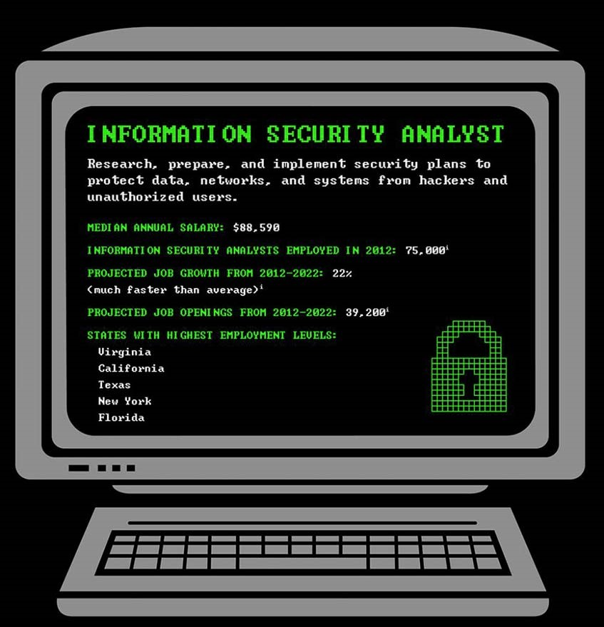
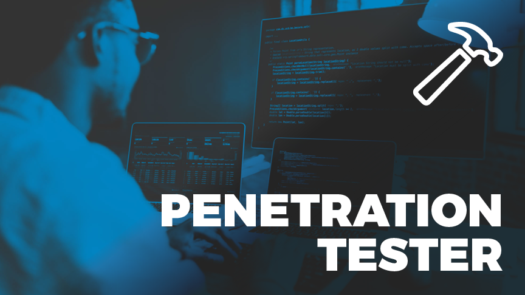
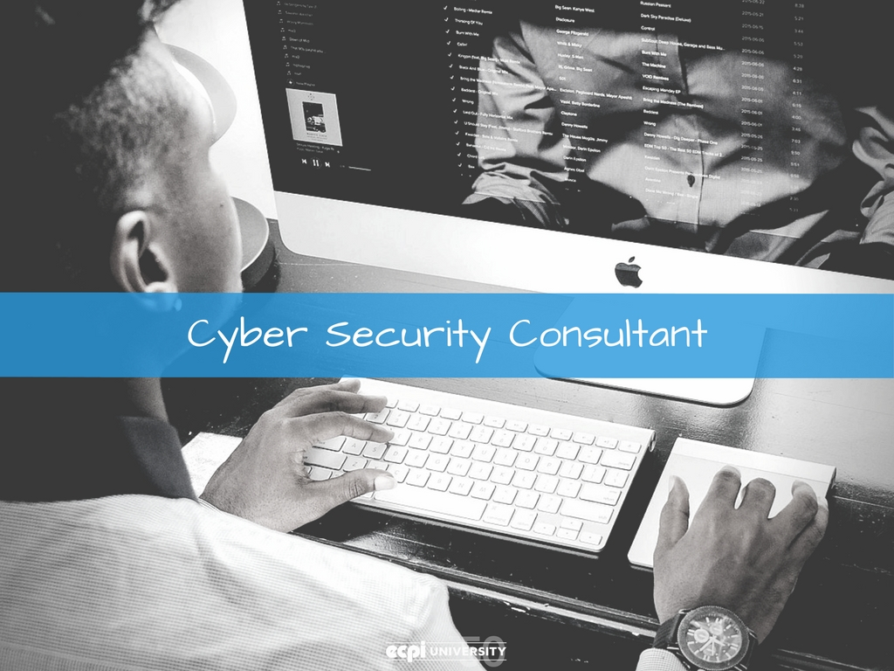

Overview of the types of Cyber Security
Information Security Analyst
According to the US News report on best technology jobs, an information
security analyst's title comes in at number five. It is a demanding job
with long hours and a schedule that is at the mercy of security breaches
and infiltrations into the systems you're charged with protecting.
At the same time, this role is highly dynamic and engaging. An information
security analyst is tasked with protecting sensitive information. They are
responsible for developing security strategies and policies, implementing
them, ensuring they are up to date and properly utilized, monitoring the
results, and making necessary adjustments. At times, an analyst might also
organize security training for other employees.

Security Architect
A Security Architect's main task is to pinpoint the strengths
and weaknesses of the client's systems. It is often said that a security architect
must think like a hacker to successfully identify the tactics a hacker would use to
breach their systems. Security architects prepare the budget, allocate staff and
resources manage security IT teams, and generate reports for the executive levels.
In terms of seniority, a security architect is typically above a security engineer.
The architects offer recommendations based on their assessment of security
vulnerabilities, and the engineers put these recommendations into practice.
Penetration Tester (Pentester)
While a security architect must think like a hacker, a pentester must be one
.An ethical hacker, at least. If you've heard of white hat hackers hired to
attempt and breach an organization's security measures using their hacking
skills and software - those would be penetration testers.
Their primary role is to simulate a cyber attack to test their clients' various
security programs and firewalls. Their findings are vital for developing better
system security policies in the future.
Keep in mind that a pentester's job isn't 100% centered around the Hollywood-like
thrill of hacking into a seemingly impenetrable infrastructure. It also involves
administration and writing detailed reports, which can be relatively dull in
comparison.

Chief Information Security Office(CISO)
As you may tell from the 'chief' in the job title, the role of a CISO is not a
beginner's one. In fact, one becomes a chief information security officer only
after years and years of experience. This leadership position is less about coding
and more about project management, vulnerabilities management, and overall security
management.
If you're aiming to become a CISO, you need to have excellent organizational skills.
Once you identify security risks in your company, it is your job to develop the
strategies to mitigate these risks. Likewise, your people skills should be up to par
since you will also be in charge of human resources issues, training, and compliance.
Information Security Crime Investigator
At a cross-section between law enforcement and cybersecurity lies the title of an
information security crime investigator or a computer forensics expert.
These professionals work on investigating cyberattacks, determining what (or who)
caused them,and how exactly the network or computer system was infiltrated.
They may not be directly employed by law enforcement, but they closely collaborate
with them, as well as different law firms that depend on the expert's detailed
security reports. Cybercrimes are punishable by law, and those who are skilled in
identifying the culprits are highly valued in the IT security industry.

Security Consultant
If you have enough expertise, good connections, and are keen on entering the
entrepreneurial world, you might consider becoming a systems security consultant.
Cyber Consultant are independent contractors who offer their knowledge and
advice to various organizations about their network security.
You will need to possess a wide range of technical, analytical, communication, and
computer skills. As with all other IT security job roles, you also need to keep up
with all the latest technology news and security recommendations as a consultant.
